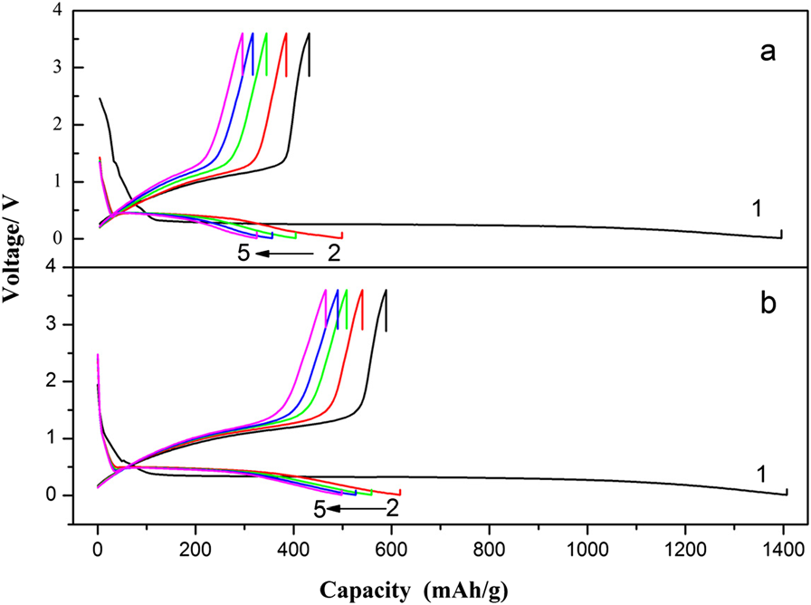

SEM images of MnO 2 samples obtained under (a) neutral and (b) acidic conditions. The scale bar is 1 μm. The inset shows the enlarged SEM image of MnO 2 sample and the scale bar is 200 nm.
Figure 1
The formation procedure of the MnO 2 micromaterials. (a) Caddice-clew-like and (b) urchin-like MnO 2 samples.
Figure 2

The XRD patterns of MnO 2 materials. (a) Caddice-clew-like and (b) urchin-like MnO 2 samples.
Figure 3
Charge-discharge specific capacity-voltage curves of MnO 2 anode materials in the potential range of 0.01 ~ 3.60 V at 0.2 C. (a) Caddice-clew-like and (b) urchin-like MnO 2 samples.
Figure 4
Cyclic voltammograms of MnO 2 materials. After five charging-discharging cycles measured at a scan rate of 0.05 mV s −1in the potential range of 0.01 ~ 3.60 V. (a) Caddice-clew-like and (b) urchin-like MnO 2 samples.
Figure 5
Nyquist plot of Li/MnO 2 cells after five charging and discharging cycles at open circuit voltage. The frequency ranged from 0.1 Hz to 100 kHz with an applied AC signal amplitude of 5 mV. (a) Caddice-clew-like and (b) urchin-like MnO 2 samples. Symbols represent experimental data and lines represent fitted spectra using equivalent circuit. The inset is the equivalent circuit.